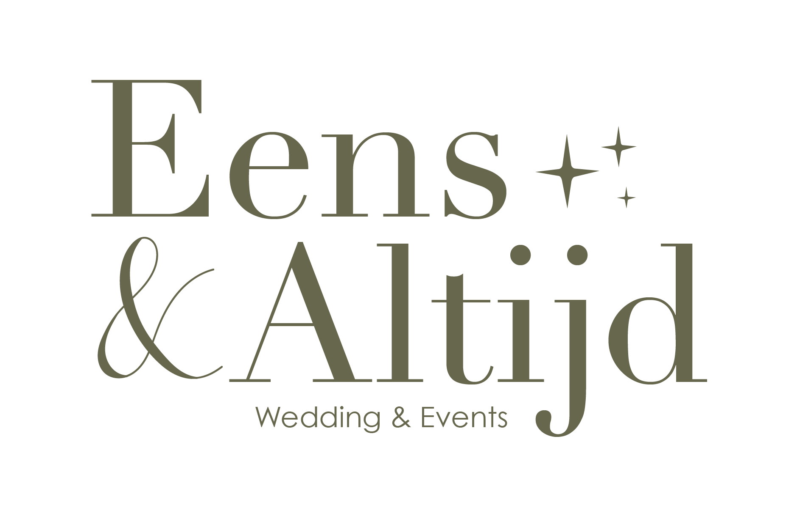

Wanneer je op mijn website actief bent of contact met mij opneemt, deel je soms persoonsgegevens met mij. Ik ga zorgvuldig met deze gegevens om en houd mij aan de hierbij geldende wet- en regelgeving. Deze wetten gaan over het bewaren en gebruiken van jouw persoonsgegevens.
In deze privacyverklaring leg ik je uit welke gegevens ik van je verzamel en wat ik met deze gegevens doe. Deze privacyverklaring geldt voor alle interactie tussen jou en Eens & Altijd, de manier van communicatie maakt daarbij niet uit. Eens & Altijd is verantwoordelijk voor de verwerking van de persoonsgegevens zoals vermeld in deze privacyverklaring. Je kunt vragen of opmerkingen betreffende jouw privacy versturen naar eensenaltijd@gmail.com.
Alle gegevens die iets over jou vertellen en gebruikt kunnen worden om jou te identificeren zijn persoonsgegevens. Denk bijvoorbeeld aan je naam, je contact- of adresgegevens en je BSN. Sommige van deze gegevens zoals etnische afkomst, geloof of een strafrechtelijk verleden zijn bijzondere persoonsgegevens.
Bijzondere persoonsgegevens — Ik verzamel geen bijzondere persoonsgegevens.
Ik heb niet de intentie om persoonsgegevens van personen jonger dan 16 jaar te verwerken. Ik kan echter niet controleren of een bezoeker van mijn websites en servers ouder dan 16 jaar is. Als je ervan overtuigd bent dat ik persoonlijke gegevens van een minderjarig persoon heb verzameld zonder toestemming van ouder of voogd, kun je contact opnemen via eensenaltijd@gmail.com en dan verwijder ik, indien mogelijk, deze informatie. Indien gegevens van personen jonger dan 16 jaar door mij worden verzameld, zal dit altijd gebeuren met toestemming van zijn/haar ouder of voogd.
1. Om je te kunnen helpen als je vragen hebt. Ik help je graag verder als je ergens tegenaan loopt of een vraag voor mij hebt. Je kunt mij bellen, e-mailen of een formulier invullen op de website. Ook kan het zijn dat ik je gegevens krijg via derden in verband met mijn dienstverlening. Als je vragen voor mij hebt sla ik op: naam, e-mailadres, jouw bericht. Wettelijke grondslag: gerechtvaardigd belang.
2. Om offertes op te stellen en naar je te versturen. Hiervoor sla ik op: N.A.W. gegevens, e-mailadres, telefoonnummer. Wettelijke grondslag: gerechtvaardigd belang.
3. Om een overeenkomst uit te voeren — contact op te nemen voor kennismakingsgesprekken, aantekeningen en/of opnamen van gesprekken te maken, afspraken te maken en na afloop een evaluatieformulier te sturen. Ik sla op: N.A.W. gegevens, e-mailadres, telefoonnummer, overige door jou aangeleverde gegevens. Wettelijke grondslag: uitvoering van de overeenkomst.
4. Om je te kunnen factureren en incasseren. Ik sla op: N.A.W. gegevens, e-mailadres, telefoonnummer. Wettelijke grondslag: wettelijke verplichting.
5. Om je op de hoogte te houden van wijzigingen in mijn dienstverlening. Ik sla op: naam, e-mailadres. Wettelijke grondslag: uitvoering van de overeenkomst.
6. Om je mijn nieuwsbrieven te sturen. Ik sla op: naam, e-mailadres. Wettelijke grondslag: toestemming.
7. Om jouw review op mijn website en/of social media te kunnen delen. Ik sla op: naam, functie/beroep. Wettelijke grondslag: toestemming.
Eens & Altijd gebruikt functionele en analytische cookies. Een cookie is een klein tekstbestand dat bij het eerste bezoek aan een website wordt opgeslagen op je computer, tablet of telefoon. Ik gebruik cookies met een puur technische functionaliteit zodat de website werkt zoals bedoeld.
Daarnaast gebruik ik analytische cookies zoals Google Analytics en Google Tag Manager om het gedrag van mijn bezoekers te kunnen bestuderen en aan de hand hiervan mijn website te kunnen verbeteren.
Als ik je toestemming nodig heb om cookies te mogen plaatsen, vraag ik je dit tijdens je eerste bezoek aan mijn website. Ik verwijs je daarbij ook naar mijn cookiebeleid. Je kunt je afmelden voor cookies door je internetbrowser zo in te stellen dat deze geen cookies meer opslaat.
Ik werk voor het uitvoeren van mijn dienstverlening samen met verschillende leveranciers en partners, onder andere partijen die:
Met subverwerkers heb ik verwerkersovereenkomsten en/of geheimhoudingsverklaringen afgesloten om de veiligheid van jouw gegevens te waarborgen. Ik werk alleen samen met partners die kunnen voldoen aan de AVG-wetgeving. Enkele van mijn partners bevinden zich buiten de Europese Economische Ruimte. Je gegevens kunnen worden verwerkt in Amerika en/of andere landen waar deze bedrijven hun cloudopslag, servers en/of backups hebben.
Met deze partners heb ik passende maatregelen genomen, contractueel afgesproken via een verwerkersovereenkomst / Data Processing Addendum of via een modelovereenkomst van de Europese Commissie. Zo zorg ik ervoor dat jouw gegevens goed worden beschermd.
In principe deel of verkoop ik je gegevens niet met personen of organisaties buiten Eens & Altijd, behalve met partners zoals hierboven beschreven. Ook kan het zijn dat ik verplicht word om je gegevens door te geven op grond van een wettelijke plicht.
Eens & Altijd heeft passende technische en organisatorische beveiligingsmaatregelen genomen om je persoonsgegevens te beschermen tegen misbruik, onrechtmatig of ongeautoriseerd gebruik en verlies.
Alle partijen die jouw gegevens voor mij verwerken (subverwerkers) of in kunnen zien tekenen een verwerkersovereenkomst of geheimhoudingsverklaring. Deze overeenkomsten worden bewaard voor de duur van de samenwerking.
Voor verschillende gegevensstromen hanteer ik verschillende bewaartermijnen. Je hebt altijd het recht om mij te verzoeken je gegevens te verwijderen — zie "Jouw rechten".
Persoonsgegevens: naam, adresgegevens, telefoonnummer en e-mail verwijder ik 2 jaar na ons laatste contact.
E-mail: e-mail ouder dan 2 jaar wordt verwijderd, tenzij nog relevant voor het uitvoeren van een overeenkomst of oplossen van een geschil.
Facturen en offertes: kunnen worden verwijderd na de wettelijke bewaartermijn van 7 jaar.
Nieuwsbrief: je kunt op ieder gewenst moment je gegevens zelf uit mijn nieuwsbriefsysteem verwijderen.
Je hebt het recht om je persoonsgegevens in te zien, te corrigeren en te verwijderen. Daarnaast heb je het recht om jouw toestemming in te trekken of bezwaar te maken tegen de verwerking van jouw persoonsgegevens door Eens & Altijd. Ook heb je recht op gegevensoverdraagbaarheid. Stuur je verzoek naar eensenaltijd@gmail.com.
Om er zeker van te zijn dat het verzoek door jou is gedaan, vraag ik je een kopie van je identiteitsbewijs mee te sturen, waarop pasfoto, MRZ, paspoortnummer en BSN zwartgemaakt zijn. Ik reageer zo snel mogelijk, maar uiterlijk binnen vier weken. Je hebt ook de mogelijkheid een klacht in te dienen bij de Autoriteit Persoonsgegevens.
Wanneer er ondanks alle voorzorgsmaatregelen toch een datalek plaatsvindt, houd ik mij aan de meldplicht datalekken en meld ik dit binnen 72 uur na constatering bij de Autoriteit Persoonsgegevens. Ontdek je zelf een datalek, deel dit dan binnen 24 uur via eensenaltijd@gmail.com.
Deze privacyverklaring heeft alleen betrekking op de persoonsgegevens die Eens & Altijd verwerkt ten behoeve van de hierin besproken punten. Eens & Altijd accepteert geen verantwoordelijkheid of aansprakelijkheid voor websites of diensten van derden.
De inhoud van deze privacyverklaring kan op ieder moment worden aangepast om in te spelen op nieuwe wet- of regelgeving of wijzigingen binnen mijn bedrijf. Raadpleeg deze verklaring geregeld om op de hoogte te blijven. Door na wijzigingen gebruik te blijven maken van mijn diensten ga je akkoord met deze wijzigingen.
Heb je verder nog vragen of opmerkingen? Neem contact op via eensenaltijd@gmail.com of per post:
Eens & Altijd
T.a.v.: Elise Hans
Zwedeweg 26
7513 CW Enschede
Eens & Altijd is geregistreerd bij de Kamer van Koophandel onder nummer 42113689.
Versie: juli 2026